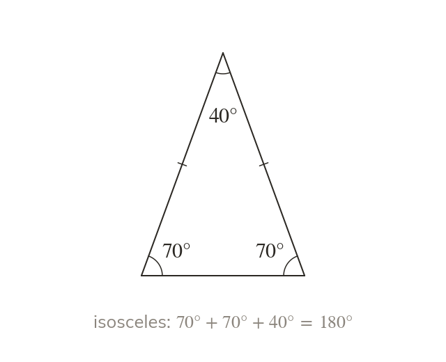

Triangle types and the angle sum
Angles in a triangle always sum to An isosceles triangle has equal angles opposite its two equal sides. An equilateral triangle has three angles.
Angles in a triangle always sum to An equilateral triangle has three equal sides and three angles; an isosceles triangle has two equal sides, and the two angles opposite those equal sides are also equal; a scalene triangle has no equal sides or angles. A right-angled triangle has one angle, so its other two angles sum to